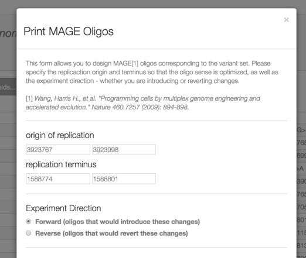

Example Views on the Datasets Presented in Millstone
Demo Machine Front Page, listing the four projects.
1. Show the list of Tenaillon samples and associated phenotype information.
2. List all variants which meet the Tenaillon variant-calling threshold. These variants were saved into a variant set called “Tenaillon Strong Evidence” for further querying. The query string used to generate this set is:
(AF > 0.7 & DP > 5) | INFO_METHOD == GRAPH_WALK | INFO_METHOD == COVERAGE | INFO_METHOD == SV_GRAPH_WALK
3. List of Genes enriched for mutations across all lines. Compare with Table 1 from Tenaillon et al., Science 2012.
4. ybaL is an inner membrane protein that is highly enriched for mutations across the clones (as seen in the gene list above). This query lists all mutations in ybal across all evolved lines
INFO_EFF_GENE=ybaL & AF > 0.7 & INFO_EFF_EFFECT != 'None'
5. You can sort this list by the column “# Samples”. The top variant occurs in 7 samples. If you click the magnifying glass (see image below) you can see all lines which have this variant.
6. Jbrowse can show you all unique mutations in the ybal gene. In addition to the link below, this view can be reached by selecting one of the icons and zooming out to the whole ybaL gene.
7. Finally, Jbrowse can be used to view structural variants and confirm them visually. Here is the coverage data for three samples, one with a ~3.5kb deletion called by millstone, compared to the ancestor strain and another evolved line without a deletion.
1. A list of all designed UAG-to-UAA mutations, in Variant Set view.
2. After clicking the link above, from the ‘Select action with set’ button, you can design MAGE oligonucleotides for each variant from this set, to either revert or create these mutations. This function is enabled in the demo, you can download a .csv with the oligos to synthesize.
3. List all variants which occur in the final strain, are not designed, and have a high effect. These are candidates for reversion to fix any phenotype deficits.
VARIANT_SET_UID=964875c3 & SAMPLE = recoli_misq_c31_321D & (INFO_EFF_IMPACT = HIGH | INFO_EFF_IMPACT = MODERATE) & INFO_EFF_EFFECT != None
4. List of tolC deletions in various strains, toggled during negative and positive selection during strain assembly.
1. Download all called mutations across the clones into a .csv for downstream analysis (e.g. in python or R) and linear modeling.
Link.
1. All mutations in the tyrS gene across all clones. The tyrS
gene is shown as enriched in the Genes list as well.
Link.
2. The user can examine the read alignments at the location of the lon mobile element insertion in JBrowse. An nsAA-dependent clone is shown below the others for comparison, as in Figure S3.